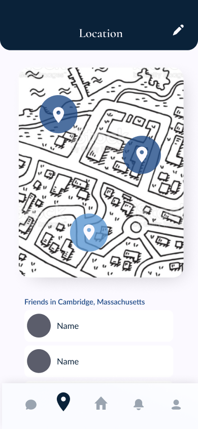
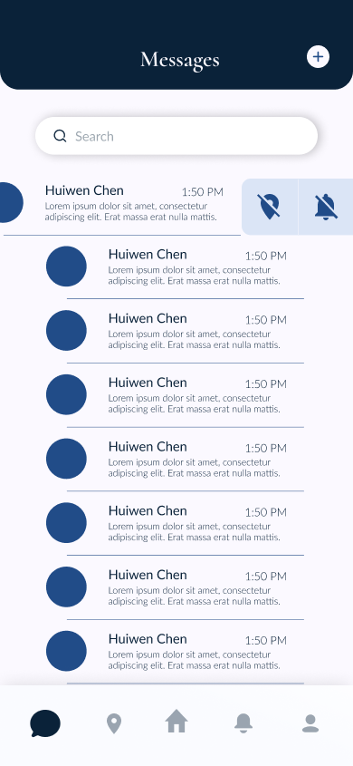
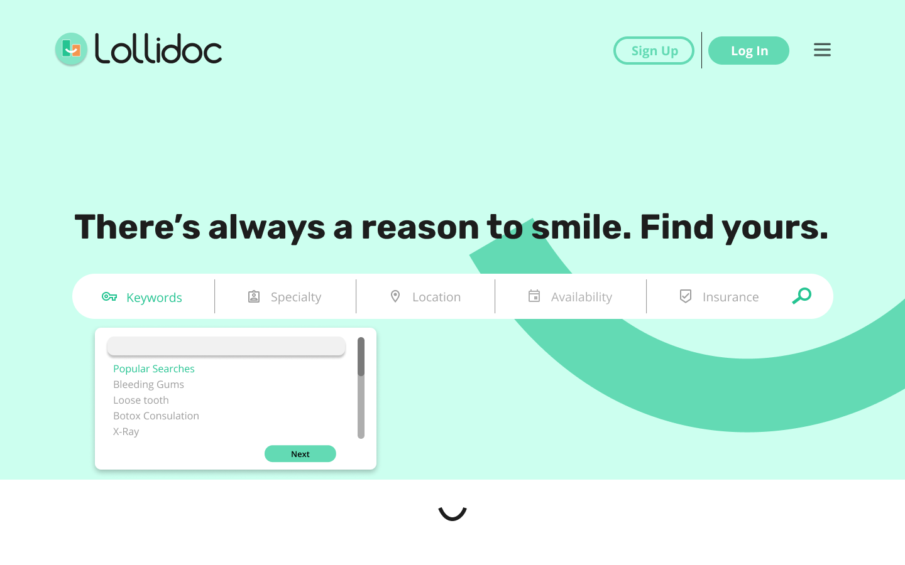
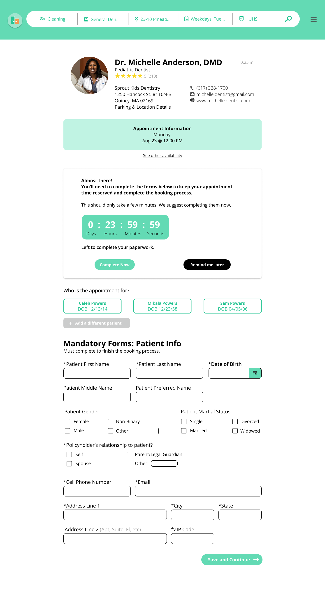
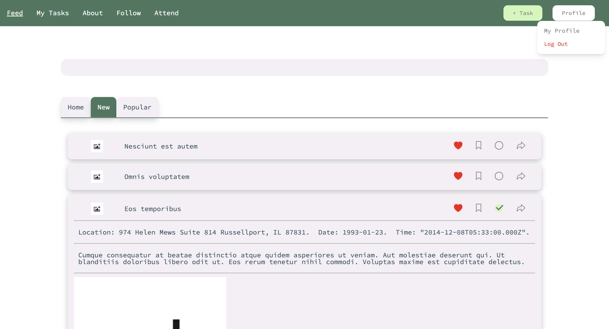

PROJECTS
- Fluke. A mobile app to stay in touch with friends while traveling, including
notifications when you're near a friend, messaging services, and GPS capabilities.
Created for a client while @ HSA DEV. Built with React-Native, GraphQL, knex/objection.js,
and a PostgreSQL database.


- Lolllidoc. A web app for a local dentist business to manage patient bookings,
forms, and communication through a central dashboard. Created for a client while @ HSA DEV in a
small engineering team, with collaboration with an in-house design team. Built with React, GraphQL,
knex/objection.js, and a PostgreSQL database.


- Execute.
Web app in progress for a startup centered at organizing activists, using a social incentive.
Functionalities include event discovery, creation, and viewing of friends' recent activist activity.
As an intern, I designed and implemented a platform for organizing activist movements and non-profits; Collaborated with the founder to
translate wireframes into visually appealing web-flows and screens using
Figma; Developed and maintained responsive user interfaces using React, utilized GraphQL to streamline data
fetching; Maintained a backend server through Node.js/express, designed and implemented database schemas in
PostgreSQL/objection.js; and utilized Git for version control, and Jira for managing collaboration with fellow engineers on a strict timeline.

- PyTorch Playground.
Playground
Repository:
Side project created during Summer 2022, to play around with PyTorch and varioius data science projects.
Trained on various free datasets, such as MNIST, GTSRB, and a Kaggle dataset to predict credit scores.
- Olfactory Bulb Gamma Oscillation Modeling.
Modeling Repository:
Research project for the Murthy Lab during Summer 2023. Models of gamma oscillation bands found in the mouse
olfactory
bulb, based on a 1989 model. Expanded model through additional parameters in cortical input (constant),
amplitude of the
input through olfactory receptors, and mitral/granule connectivity patterns.
- Odor De-Mixing Research Project.
Odor
World: A research project made to de-mix odors in a neural network, using a synthetic dataset of natural odors.
Built with Flask, HTML, CSS, and JavaScript.
- SoundBite Startup.
Created an initial prototype for a podcast discovery app with React Native. Generated a search and encoding functionality
with Pinecone API.
- DonorAtlas.
DonorAtlas: A web app to find donors in your area.
Helped with the development of the front-end for a beta version of the product.
- (WIP) Crochet Business Store.
Store Repository:
Storefront for a crochet business, still in development. Built with Flask framework and MySQL database using
SQLAlchemy ORM.